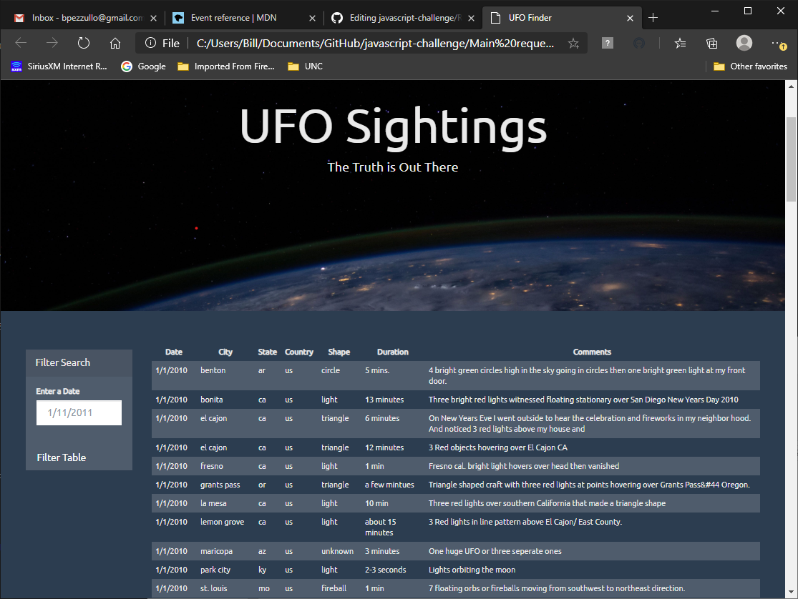
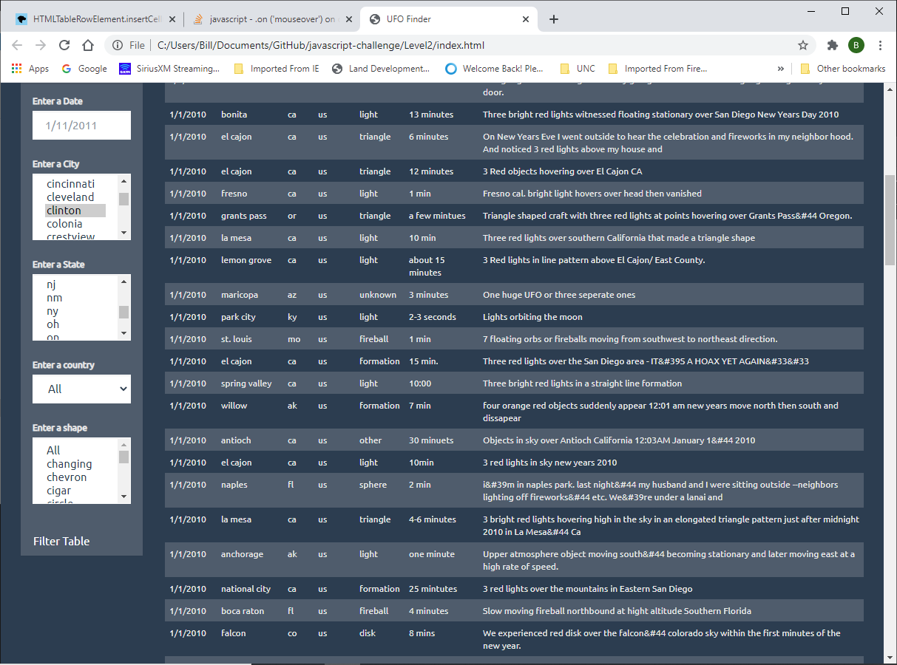

Goal:
Build a set a web page that allows the user search website csv file / database.
There are 2 directories in the repository. The first one covers the main request to filter by date. The
below picture shows what it would look like. Open the index.html file under the directory to see the
application. Enter a date and hit the filter button to filter down the data.
UFO Sightings Level 1

The second directory is called Level2 and includes the request to filter on all the fields. That was
provided and some of the fields City, state and shape are multi-selection capable. Below is a screenshot
of the webpage look. Opend the index.html file from the Level2 directory to see the application. Enter a
date or any other input to filter down the data. The city, state and shape are multi select fields.
UFO Sightings Level 2

Created a basic HTML web page.
Using an UFO dataset in the form of an array of JavaScript objects, create the drop downs and table.
Used multiple input tags and select dropdowns, so the user can to set multiple filters and search for
UFO sightings using criteria based on the table columns:
- date/time
- city
- state
- country
- shape
- Dataset
- UFO Sightings Data